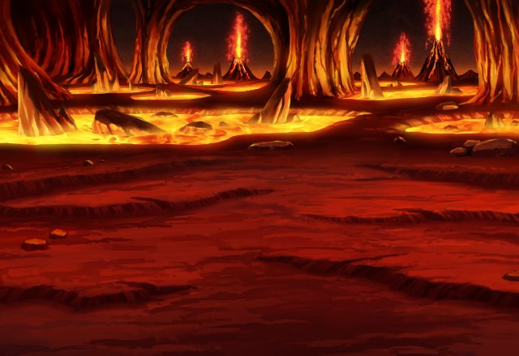
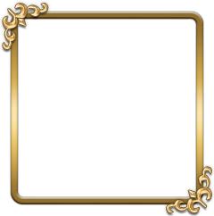

ルジーナ
おせーぞ！ Shou-chanー！！
セリア
こんなアツい場所で、どうしてあんたに 待たされなくちゃいけないのよ。
パリス
あら、お二人さん、ずいぶんと 仲がいいのね。
カル
女神さん、それとインペリアルガードの パリスさんだっけ？
カル
頼むからこれ以上、面倒事を 増やさないでくれ……。
カル
一応、俺の育ての親が 大変な状況なんだからさ……。
カル
グラデンス爺さんがゼヴァルアに捕まった って話は本当なんだろうな？
パリス
ある信用できる筋からインペリアルガードに 届いた情報だから確度は高いわ。
ルジーナ
チッ、召喚老のクセに 捕まってんじゃねーよ。
ティリス
ルジくん！ そんなこと言っちゃダメだよ！
ティリス
グラ爺だってみんなのために がんばってくれてたんだから！
パリス
女神様ともなると人間には理解できない 何かを持ってらっしゃるのね。
パリス
フフッ、有名なカル召喚師から さん付けされるなんて光栄だわ。
カル
このミルヴァーナのどこかに 爺さんが捕まっているのは確かなんだな？
ティリス
私もグラ爺がゼヴァルアに捕まったなら このミルヴァーナのどこかだと思うよ。
ティリス
ゼヴァルアの支配している地で 残っているのはここだけだから。
カル
となると、それっぽい場所を 手分けして探すのが早そうだな。
ルジーナ
オメーら俺様の足手まといに なるんじゃねーぞ！
カル
Shou-chan。 お前の力、頼りにしてるぜ。
カル
俺を助けてくれたその力で 爺さんも助けてやってくれ！